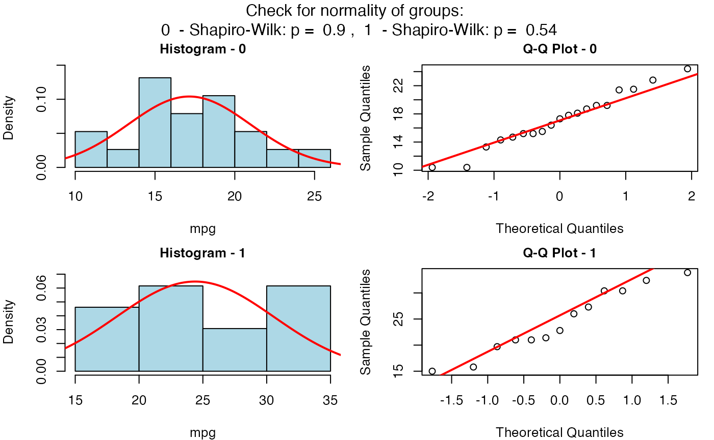
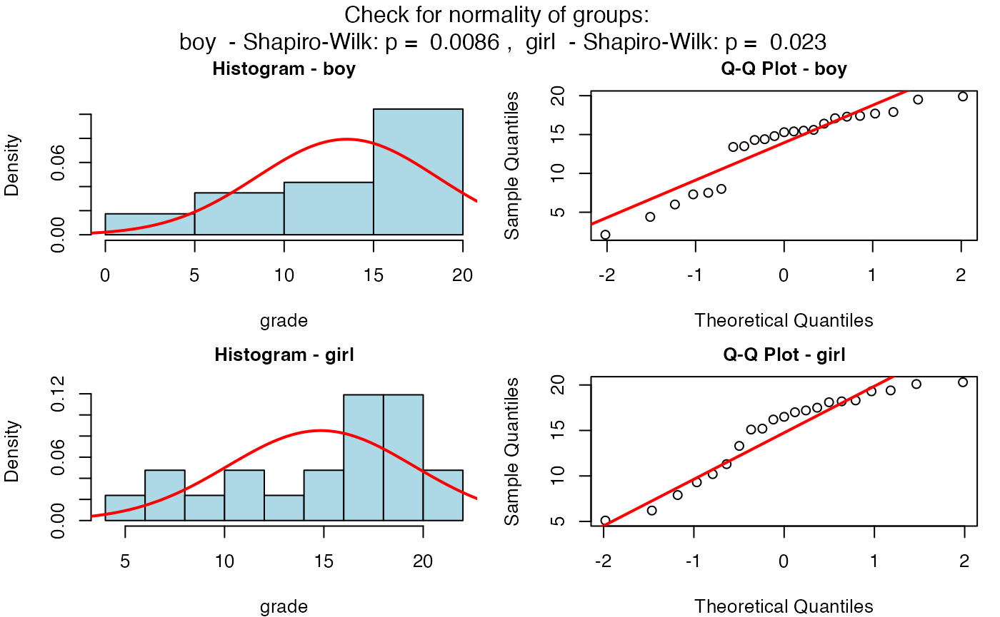
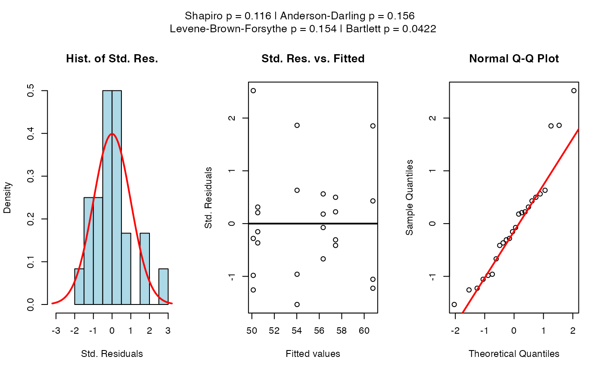
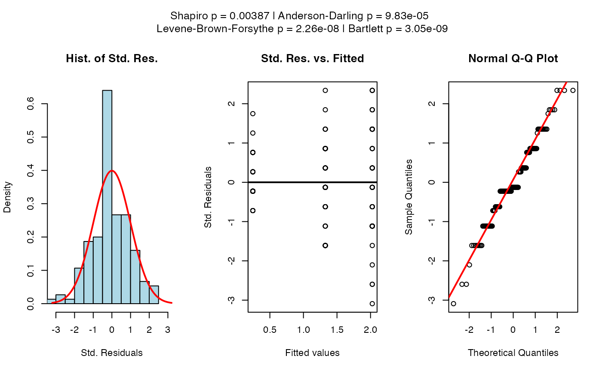
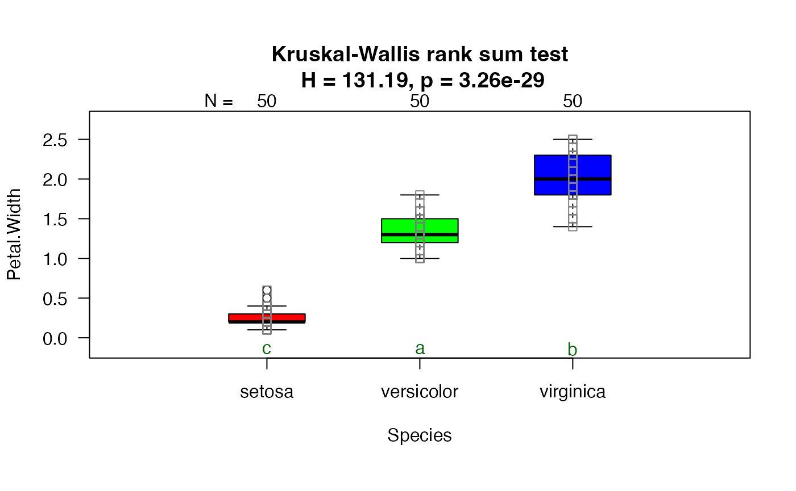
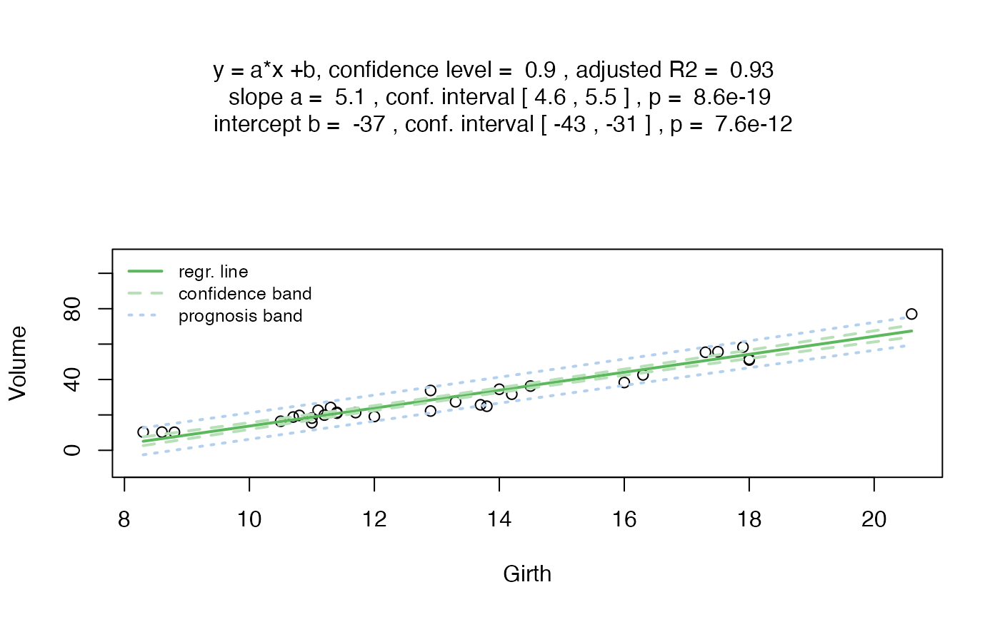
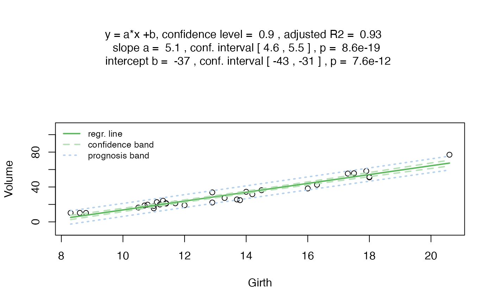
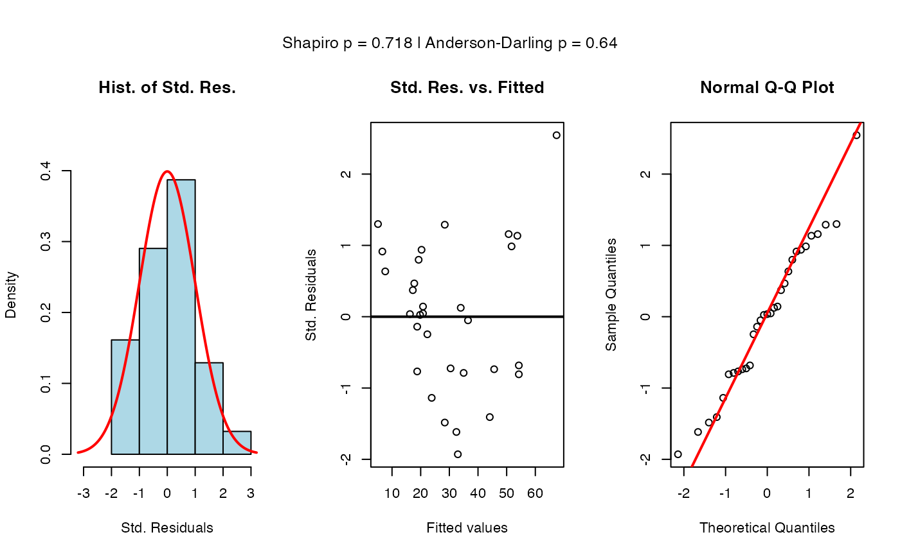
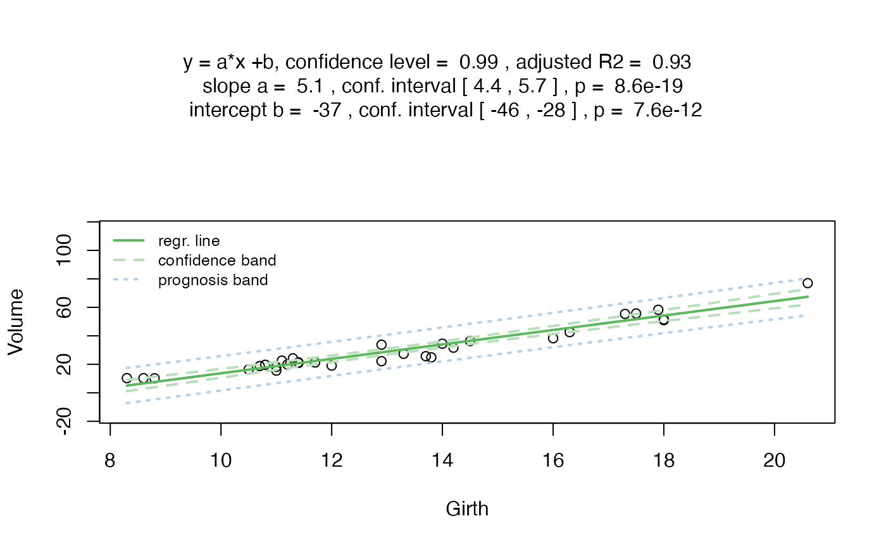

Abstract
The R package visStatistics enables rapid visualization
and statistical analysis of raw data by automatically selecting the
hypothesis test with the highest statistical power to evaluate the
relationship between a dependent variable (varsample) and
an independent variable (varfactor) within a
data.frame.
A minimal function call has the following structure:
visstat(dataframe, varsample, varfactor)The data must be structured in columns, with varsample
and varfactor being character strings naming the dependent
(response) and independent (feature) variables, respectively.
The choice of statistical test performed by the core function
visstat() depends on whether the variables are numerical or
categorical, the number of levels in the categorical variable, and the
distribution characteristics (normal vs. non-normal).
In this vignette, data of class "numeric"
or "integer" are referred to as “numerical”, while data of
class "factor" are referred to as
“categorical”.
The function generates a graph showing the key statistics of the selected test. The complete test statistics are also returned as part of the output.
This vignette outlines the decision logic behind
visstat(); the full parameter list is available via
?visstat. A graphical representation of the the decision
tree for a categorical feature and a numeric response is given in
@ref(sec:decisiontree)
Note: All statistical tests use default settings except for the
user-adjustable conf.level parameter. As a consequence,
paired tests are not currently supported. Furthermore, as the main
purpose of this package is the visualization of statistical test
results, only simple linear regression is implemented.
Comparing central tendencies
If the feature consists of data of class
"factor" with two or more levels and the response consists
of data of class "numeric" or
"integer" (both of mode "numeric"), tests are
applied to compare the central tendencies.
Two sample tests: Welch’s t-test or Wilcoxon rank sum test
If the feature has exactly two levels, Welch’s t-test or its non-parametric alternative, the Wilcoxon rank sum test, is performed. Welch’s t-test evaluates the null hypothesis that the two groups have equal means. While Student’s t-test assumes equal variances (homoscedasticity), Welch’s t-test does not require this assumption. It loses little robustness compared to Student’s t-test even when the assumptions of Student’s t-test are met (Moser and Stevens 1992; Delacre et al., n.d.); therefore, Student’s t-test is not implemented. The Wilcoxon rank sum test, on the other hand, tests whether the two samples come from the same population or have identical distributions, without assuming normality.
The test choice follows the algorithm below:
If the sample size for both levels is greater than 30, always perform Welch’s t-test (
t.test()) (@ Rasch, Kubinger, and Moder 2011; Lumley et al. 2002). For large samples, the t test has been shown to be robust in many situations o test or not to test: Paper: Preliminary assessment of normality when comparing two independent samplesIf the sample size of at least one of the levels is smaller than 30, first check for normality of both levels with the Shapiro-Wilk normality test (
shapiro.test()):If the p-values of the
shapiro.test()of both levels are greater than the error probabilityconf.level, perform the Welch’s t-test (t.test()).If the p-value of at least one of the levels in the
shapiro.test()is smaller than the error probabilityconf.level, a Wilcoxon rank sum test (wilcox.test()) is executed.
The graphical representation consists of box plots overlaid with
jitter plots showing each data point. In the case of Welch’s t-test, the
conf.level
- confidence intervals are also shown. The test statistics of the chosen
test as well as the summary statistics of the generated box plots are
returned as a list.
Examples
Welch’s t-test
As an example we use the motor trend car road test data set
(mtcars), which consists of 32 observations. In the example
below mpg denotes miles per US gallon, am the
transmission type ((0 = automatic, 1 = manual)).

Increasing the confidence level conf.level from the
default 0.95 to 0.99 results in wider confidence intervals:
mtcars$am <- as.factor(mtcars$am)
t_test_statistics_99 <- visstat(mtcars, "mpg", "am", conf.level = 0.99)
Wilcoxon rank sum test
grades_gender <- data.frame(
sex = as.factor(c(rep("girl", 21), rep("boy", 23))),
grade = c(
19.3, 18.1, 15.2, 18.3, 7.9, 6.2, 19.4,
20.3, 9.3, 11.3, 18.2, 17.5, 10.2, 20.1, 13.3, 17.2, 15.1, 16.2, 17.0,
16.5, 5.1, 15.3, 17.1, 14.8, 15.4, 14.4, 7.5, 15.5, 6.0, 17.4,
7.3, 14.3, 13.5, 8.0, 19.5, 13.4, 17.9, 17.7, 16.4, 15.6, 17.3, 19.9, 4.4, 2.1
)
)
wilcoxon_statistics <- visstat(grades_gender, "grade", "sex")
One-way test, ANOVA or Kruskal-Wallis test
If the feature consists of data of class
"factor" with more than two levels and the response is of
mode "numeric", visstat()
performs an analysis of variance (ANOVA),if neither of the following
null hypotheses cannot be rejected on the chosen
conf.level:
- normality of the standardised residuals and
- homoscedasticity.
If only the first condition for the normality of the residuals is
met, visstat() performs a one-way test (see
oneway.test()). If the normality of the residuals cannot be
assumed, a Kruskal-Wallis test (kruskal.test()) is used.
These assumptions are tested by the visAnovaAssumptions()
function.
Checking the ANOVA assumptions
Residual analysis
The visAnovaAssumptions() function assesses the
normality of standardized residuals from the ANOVA fit using both the
Shapiro-Wilk test (shapiro.test()) and the Anderson-Darling
test (ad.test()).
It plots the standardised residuals against the fitted means of the
linear model for each level of the feature varfactorand
generates the Q-Q plot of the standardised residuals.
Homoscedasticity: homogeneity of variances in each level: Bartlett test
Both aov() and oneway.test() test whether
two or more samples from normal distributions have the same mean. While
aov() requires homogeneity of variances in each level
(group), the oneway.test() does not require that the
variances in each level are necessarily equal. Homoscedasticity is
assessed using the Bartlett test, see bartlett.test(),
under the null hypothesis that the variances in each of the levels are
equal.
One-way test and ANOVA
Depending on the p-value of the bartlett.test(), the
corresponding test is shown in the figure title:
If the p-value of the
bartlett.test()is greater than1-conf.level, we assume homogeneity of variances in each level (group) and the p-values ofaov()are displayed.Otherwise homoscedasticity cannot be assumed and the p-value of
oneway.test()is reported.
Post-hoc analysis: Tukey’s honestly significant differences (HSD) and Sidak corrected confidence intervals
Simple multiple comparisons of the means for the factor levels in an analysis of variance inflate the probability of declaring a significant difference when, in fact, there is none . The family-wise error rate (also called the probability of a type I error) is the probability of at least one false positive comparison, in which the null hypothesis is falsely rejected, when multiple comparisons are performed.
Tukey`s honestly significant differences (HSD)
The visstat() function reduces the probability of a type
I error by applying Tukey’s Honestly Significant Differences as
implemented in TukeyHSD(). Based on the specified
confidence level conf.level, it constructs a set of
confidence intervals for all pairwise differences between factor level
means. A significant difference between two means is indicated when the
corresponding confidence interval does not include the zero. The
function returns both the confidence intervals and the Tukey
HSD-adjusted p-values for all pairwise comparisons.
In the graphical representation of One-way test and ANOVA, green
letters between two factor levels differ only, if the Tukey’s HSD
adjusted p-value for their comparison is smaller than
conf.int.
Sidak corrected confidence intervals
Tukey`s HSD procedure is based on pairwise comparisons of the differences between the means at each factor level and produces a set of corresponding confidence intervals. The Sidak procedure, on the other hand, addresses the problems of a type I error by lowering the acceptable probability of a type I error for all comparisons of the levels of the independent, categorical variable.
The Sidak corrected acceptable probability of error (Šidák 1967) is defined as
-conf.int,
where
is the number of pairwise comparisons of the
levels of the categorical variable.
In the graphical display of One-way test and ANOVA,
visstat() displays both the conf.level
confidence intervals alongside the larger, Sidak-corrected
confidence intervals.
Limitations
Note that the current structure of visstat() does not
allow the study of interactions between the different levels of an
independent variable.
Kruskal-Wallis test
If the p-value of the standardised residuals computed by
shapiro.test() is smaller than the significance
level1-conf.level, visstat() chooses a
non-parametric alternative, the Kruskal-Wallis rank sum test.
kruskal.test() tests the null that the medians are equal at
each group level.
Post-hoc analysis: pairwise.wilcox.test()
As post-hoc-analysis the pairwise Wilcoxon rank sum test
pairwise.wilcox.test() is used, applying the default Holm
method for multiple comparisons(Holm
1979). If the Holm-adjusted p-value for a pair is smaller than
the significance level 1-conf.level, the green letters
under the corresponding two box plots will differ. Otherwise the
graphical representation of the Kruskal-Wallis test is similar to the
Wilcoxon rank sum test described above. A list with the test statistics
of the Kruskal-Wallis rank sum test and the p-values of the pairwise
comparisons adjusted by the Holm method is returned.
Examples
One-way test:
The npk dataset reports the yield of peas in
pounds/block on six blocks, where the application of nitrogen (N),
phosphate (P) or potassium (K) fertilisers was varied. Either no, one,
two or three different fertilisers were applied on the blocks.
oneway_npk <- visstat(npk, "yield", "block")
We can assume that the residuals are normally distributed based on
the scatterplots of the standardised residuals, the normal
quantile-quantile plot (Q-Q plot), and the p-values of both the
Shapiro-Wilk test and the Anderson-Darling test. But at the given
confidence level the homogeneity of variances cannot be assumed
(
as calculated with the bartlett.test()), and the p-value of
the oneway.test() is displayed.
Post-hoc analysis with TukeyHSD() shows no significant
difference between the yield between the different blocks (all green
letters are equal).
ANOVA
The InsectSprays data gives the counts of insects in agricultural
experimental units treated with six different insecticides. To stabilise
the variance in counts, we transform the count data of the
InsectSprays data set by the square root.
insect_sprays_tr <- InsectSprays
insect_sprays_tr$count_sqrt <- sqrt(InsectSprays$count)
visstat(insect_sprays_tr, "count_sqrt", "spray") 

After the transformation, the homogeneity of variances can be assumed
(
as calculated with the bartlett.test()), and the p-value of
the aov() is displayed.
Kruskal-Wallis rank sum test
The iris data set gives the measurement of the petal width in cm for three different iris species.
visstat(iris, "Petal.Width", "Species")
In the iris data example, the graphical analysis of the scatter plots of the standardised residuals as well as the Q-Q plot suggest that the residuals are not normally distributed. This visual inspection is confirmed by the very small p-values of the implemented tests of normality, the Shapiro-Wilk test and the Anderson-Darling test.
If both p-values are below the significance level
conf.level,
visstat() switches to the non-parametric alternative
kruskal.test(). Post-hoc analysis with
pairwise.wilcox.test() reveals significant differences
between the petal width of all three species (all green letters
differ).
Linear Regression
If the feature varfactor and the response
varsample have only one level of type
numerical or integer, visstat()
performs a simple linear regression.
Residual analysis
visstat() checks the normal distribution of the
standardised residuals derived from lm() both graphically
and with the Shapiro-Wilk and Anderson test (analogue to section Residual analysis). If the p-values of the
null that the standardised residuals are normally distributed of both
Shapiro-Wilk and Anderson test are smaller than 1-conf.int,
the title of the residual plot will display the message “Requirement of
normally distributed residuals not met”.
Regardless of the result of the residual analysis,
visstat() performs the regression itself in the next step.
The title of the graphical output indicates the chosen confidence level
conf.level,the regression parameter with their confidence
intervals and p-values, and the adjusted
.
The graph shows the raw data, the regression line and both the
confidence and prediction bands corresponding to the chosen
conf.level. visstat() returns a list with the
test statistics of the linear regression, the p-values of the normality
tests of the standardised residuals and the pointwise estimates of the
confidence and prediction bands.
Examples
Data set: cars
The cars data set reports the speed of cars in mph and the distance (dist) in ft taken to stop.
linreg_cars <- visstat(cars, "dist", "speed")

Increasing the confidence level conf.level from the
default 0.95 to 0.99 results in wider confidence and prediction
bands:
linreg_cars <- visstat(cars, "dist", "speed", conf.level = 0.99)

p-values greater than conf.level in both
Anderson-Darling normality test and the Shapiro-Wilk test of the
standardised residuals indicate that the normality assumption of the
residuals underlying the linear regression is met.
Data set: trees
The trees data set provides measurements of the diameter (called “Girth”) in inches and height in feet of black cherry trees.
linreg_cars <- visstat(trees, "Height", "Girth", conf.level = 0.9)

Both the graphical analysis of the standardised residuals and
p-values less than 1-conf.level in the Anderson-Darling
normality test and the Shapiro-Wilk test of the standardised residuals
suggest that the condition of normally distributed residuals of the
regression model is not met. Furthermore the linear regression model
explains only 24% of the total variance of the dependent variables
“Height” of the cherry trees. The user might consider other regression
models. These further tests are not provided by
visstat().
- and Fisher Test
If both the feature varfactor and the response are
varsample are categorical of type factor,
visstat() tests the null hypothesis, that the feature and
the response are independent of each other.
Categorical data are usually presented as multidimensional arrays,
called contingency tables. The values in each cell of the contingency
table are the observed frequencies for each unique combination of
feature and response. Based on the observed frequencies,
visstat() calculates the expected frequencies under the
null hypothesis.
If the expected frequencies are large, where large is defined as at
least 80% of the expected frequencies being greater than 5 and none of
the expected frequencies being less than 1, the
chisqu.test() is performed, otherwise the
fisher.test() (Cochran 1954).
In the case of 2-by-2 contingency tables, the continuity correction is
applied to thechisqu.test()\.
visstat() prints a grouped column plot with the p-value
of the corresponding test in the title and a mosaic plot with Pearson’s
residuals (for details see documentation of function
mosaic() in the vcd package ) are
generated.
Converting a contingency tables to a data.frame.
visstat() needs a data.frame with a column
structure as input. Contingency tables can be transformed into this
structure with the helper function counts_to_cases().
Examples based on data set: HairEyeColor
Creating a data.frame from a contingency table
counts_to_cases() transforms the contingency table
HairEyeColor into data.frame named
HairEyeColorDataFrame.
HairEyeColorDataFrame <- counts_to_cases(as.data.frame(HairEyeColor))Pearson’s Chi-squared test
hair_eye_color_df <- counts_to_cases(as.data.frame(HairEyeColor))
visstat(hair_eye_color_df, "Hair", "Eye")

Pearson’s Chi-squared test with Yate’s continuity correction
For 2 by 2 contingency tables, visstat() applies the
continuity correction to the test statistics of the Chi-squared
test.
In the following example, we select only participants with black or brown hair and brown or blue eyes resulting in a 2 by 2 contingency table.
hair_black_brown_eyes_brown_blue <- HairEyeColor[1:2, 1:2, ]
#Transform to data frame
hair_black_brown_eyes_brown_blue_df<- counts_to_cases(as.data.frame(hair_black_brown_eyes_brown_blue))
#Chi-squared test
visstat(hair_black_brown_eyes_brown_blue_df, "Hair", "Eye")

Fisher’s exact test and mosaic plot with Pearson residuals
Again, we cut a 2 x2 contingency table from the full data set, this time only keeping only male participants with black or brown hair and hazel or green eyes. Pearson’s Chi-squared on this 2 x2 contingency table would give to an expected value less than 5 in one of the four cells (corresponding to 25% of all cells), violating the requirement of the Chi-squared test that the expected value should be at least 5 for the majority (80%) of the cells (Cochran 1954). Therefore the Fisher exact test is chosen.
hair_eye_color_male <- HairEyeColor[, , 1]
# Slice out a 2 by 2 contingency table
black_brown_hazel_green_male <- hair_eye_color_male[1:2, 3:4]
#Transform to data frame
black_brown_hazel_green_male <- counts_to_cases(as.data.frame(black_brown_hazel_green_male))
# Fisher test
fisher_stats <- visstat(black_brown_hazel_green_male, "Hair", "Eye")

Saving the graphical output
The generated graphics can be saved in the file formats supported by
Cairo(): “png”, “jpeg”, “pdf”, “svg”, “ps” and “tiff”. In
the following example we store the graphics files in the output format
“png” to the plotDirectory tempdir(). The
naming convention used for the graphics file reflects the chosen
statistical test and the variable names.
visstat(black_brown_hazel_green_male, "Hair", "Eye",
graphicsoutput = "png", plotDirectory =
tempdir()
)Remove the graphical output from plotDirectory:
file.remove(file.path(tempdir(), "chi_squared_or_fisher_Hair_Eye.png"))
#> [1] TRUE
file.remove(file.path(tempdir(), "mosaic_complete_Hair_Eye.png"))
#> [1] TRUEDecision tree for categorical feature and numerical response
knitr::include_graphics("figures/decision_tree_v6.pdf")Decision tree used to select the appropriate statistical test for a categorical predictor and numerical response, based on the number of factor levels, normality and homoscedasticity.
Overview of implemented tests
t.test(), wilcox.test(),
aov(), kruskal.test(),
lm(),fisher.test(),
chisq.test()
Implemented tests to check the normal distribution of standardised residuals
shapiro.test() and ad.test()
Implemented post-hoc tests
TukeyHSD() for aov() and
pairwise.wilcox.test() for kruskal.test().